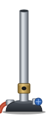
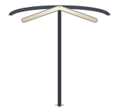
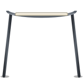
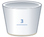
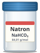

sc4.7: sprites i dobbelt størrelse

bunsen.svg (ny)

trefod_bag.svg (ny)

trefod_for.svg (ny)

digel.svg (ny)
tang.svg (ny)

natron.svg (ny)
vaegt.svg (som sc4.5)
lup.svg (som sc2.1)
opstillingen